- σ*2pz orbital
- σ2pz orbital
- π*2px/p*2py orbital
- π2px/p2py orbital
(Given E0Cu2+/Cu=0.34V;E0Zn2+/Zn=-0.76V)
- 1.345 g
- 13.45 g
- 27 g
- 2.7 g
- 0.92 J/K mol
- 8.66 J/K mol
- 0.813 J/K mol
- 0.427 J/K mol
- 10%
- 5%
- 3%
- 1%
I. Reversible
II. Results into unimolecular layer
III. Low heat of adsorption
IV. Occurs at low temperature and decreases with increasing temperature.
Which of the above properties are for physical adsorption?
- I, II, III only
- I, III, IV only
- II, III, IV only
- I, III only
- 4Fe2+ and 4O2-
- 6Fe2+ and 6O2-
- 2Fe2+ and 2O2-
- 1Fe2+ and 1O2-
- Ag3PO4(Ksp = 1 × 10-6)
- Ca3(PO4)2 (Ksp = 1 × 10-33)
- Mg3(PO4)2(Ksp = 1 × 10-24)
- AlPO4(Ksp = 1 × 10-20)
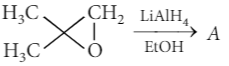
- (CH3)2CHCH2OH
- CH3CH2CH2CH2OH
- (CH3)3COH
- CH3CHOHCH2CH3
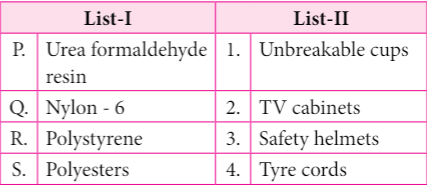
-
P,Q,R,S are respectively
- 1,4,2,3
- 1,2,4,3
- 4,2,3,1
- 4,3,2,1
- potassium amminedicyanodioxoperoxo- chromate(VI)
- potassium amminedicyanotetroxochromium(III)
- potassium amminedicyanochromate(IV)
- potassium amminocyanodiaperoxochromate(VI)
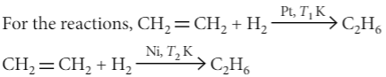
the correct relation among the following is
- T1>T2
- T2>T1
- T1=T2
- T1=2T2
(i) Cu+ undergoes disproportionation to Cu and Cu2+ in aqueous solution.
(ii) HgCl2 does not give chromyl chloride test.
(iii) Kjeldahl method is applicable to compounds containing nitrogen in nitro and azo groups and nitrogen present in the ring.
- TFT
- TTF
- TFF
- FTT
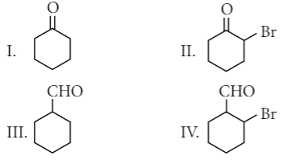
Which of the following is correct decreasing order of the reactivity towards nucleophilic addition reactions?
- (IV) > (III) > (II) > (I)
- (I) > (II) > (III) > (IV)
- (IV) > (II) > (III) > (I)
- (I) > (III) > (II) > (IV)
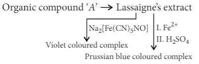
The above Lassaigne’s extract on treatment with Fe2+ does not give blood red colour because of the
- absence of S in the organic compound
- presence of halogen in the organic compound
- dissociation of NaSCN into Na2S and NaCN
- conversion of NaSCN into HSCN
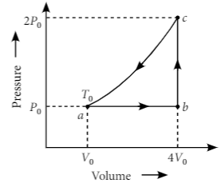
- 3P0V0
- 6RT0
- 4.5RT0
- 10.5RT0
(i) Cs is the strongest reducing agent in gaseous phase in group IA elements.
(ii) Be does not form peroxide in group IIA elements.
(iii) The density of potassium is less than sodium.
(iv) In alkali metals Li, Na, K and Rb, lithium has the minimum value of melting point.
Select the correct statements.
- (i) and (ii) only
- (i), (ii) and (iii) only
- (ii) and (iii) only
- (ii), (iii) and (iv) only
- Sc < Ti < Cr < Mn : number of oxidation states
- V2+ Cr2+ < Mn2+ < Fe2+ : paramagnetic behaviour
- Ni2+ < Co2+ < Fe2+ < Mn2+ : ionic size
- Co3+ < Fe3+ < Cr3+ < Sc3+ : stability in aqueous solution
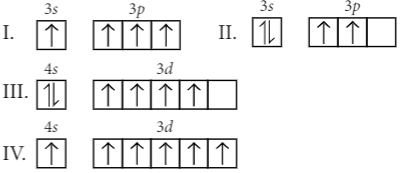

- I and III do not violate Hund’s rule of maximum multiplicity.
- Order of spin multiplicity : IV > III = I > II
- V does not violate all the three rules of electronic configuration.
- If VI represents A and when A+ is kept near a magnet, it acts as paramagnetic substance.
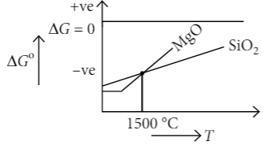
- At less than 1500°C, Mg acts as reducing agent for SiO2.
- At more than 1500°C, Si acts as reducing agent for MgO.
- Both (a) and (b)
- None of these.
- hardness is more in sample ‘B’ than in ‘A’
- hardness is more in sample ‘A’ than in ‘B’
- hardness in sample ‘A’ is twice that of the sample ‘B’
- hardness is same in both cases.
- 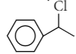
- 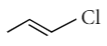
- 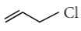
- 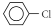
- o-nitrophenol shows intramolecular H-bonding
- o-nitrophenol shows intermolecular H-bonding
- melting point of o-nitrophenol is lower than those of m- and p-isomers
- o-nitrophenol is more volatile in steam than m- and p-isomers.
- tetrahedral
- angular
- square planar
- pyramidal
- 4KClO3 → 3KClO4 + KCl
- SO2 + 2H2S → 2H2O + 3S
- BaO2+ H2SO4 → BaSO4 + H2O2
- 2BaO + O2 → 2BaO2
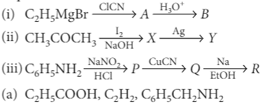
- C2H5COOH, C2H2, C6H5CH2NH2
- C2H5COOH, CHI3, C6H5CH2NH2
- C2H5CH2NH2, CH3I, C6H5COOH
- C2H5COOH, C2H5I, C6H5CONH2
- uninfluenced by occurrence of thunderstorm
- which depends on the amount of dust in air
- slightly lower than that of rain water without thunderstorm
- slightly higher than that when the thunderstorm is not there
- Each mL must be diluted to 2.5 mL.
- To each mL of solution, 2.5 mL of water should be added.
- To 1.5 mL of solution, 2 mL of water should be added.
- To 1.5 mL of solution, 1.5 mL of water should be added.
- SiO2
- Si
- SiC
- Na2SiO3
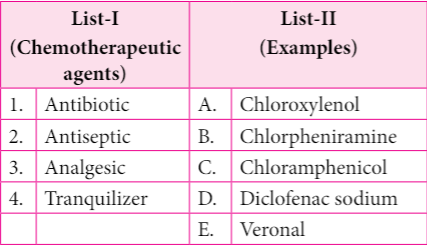
- 1–A, 2–C, 3–D, 4–E
- 1–B, 2–A, 3–D, 4–E
- 1–B, 2–C, 3–E, 4–D
- 1–C, 2–A, 3–D, 4–E
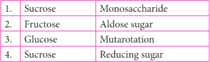
- 2, 3 and 4
- 1, 2 and 3
- 1, 2 and 4
- 2 and 4 only
- interstitial defect
- Schottky defect
- Frenkel defect
- none of these
- 1/3
- 3
- 1/6
- 6
- x/m ∝ p1
- x/m ∝ p1/n
- x/m ∝ p0
- All the above are correct for different ranges of pressure
- Acetone-benzene
- Acetone-ethanol
- Acetone-chloroform
- Benzene-methanol
- shifting of equilibrium towards reactants due to elastic collisions
- loss of active species on collision
- low probability of simultaneous collision of more than three reacting species
- increase in entropy and activation energy as more molecules are involved.
In the above reaction, the reactivity of alcohols is
- tertiary > secondary > primary
- tertiary < secondary < primary
- tertiary > primary > secondary
- secondary > primary > tertiary
- Gattermann's reaction
- Friedel-Crafts reaction
- Wurtz reaction
- Fitting reaction.
- Thiosulphato
- Oxalato
- Hydrazinium ion
- Phosphine
- 100 pm
- 125 pm
- 225 pm
- 325 pm
- 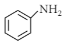
- 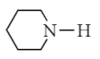
- 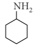
- 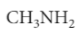
- Acylation, reduction
- Cross aldol condensation, dehydration
- Aldol condensation, oxidation
- Aldol condensation, reduction
- π-character only
- both σ and π characters
- ionic character
- σ-character only.
- peptide linkage
- phosphodiester linkage
- glycosidic linkage
- hydrogen bonds
- phthalic acid
- terephthalic acid
- adipic acid
- 1,6-hexadiamine
- Sucralose
- Alitame
- Sodium benzoate
- Aspartame
- ethoxyethane
- 2-methoxypropane
- 1-methoxypropane
- 1-butanol
- 48%
- 23%
- 32%
- 26%
- Enthalpy
- Activation energy
- Entropy
- All
- 483 nm
- 492 nm
- 122 nm
- 729 nm
- covalent bond
- sulphur linkage
- hydrogen bond
- ionic bond